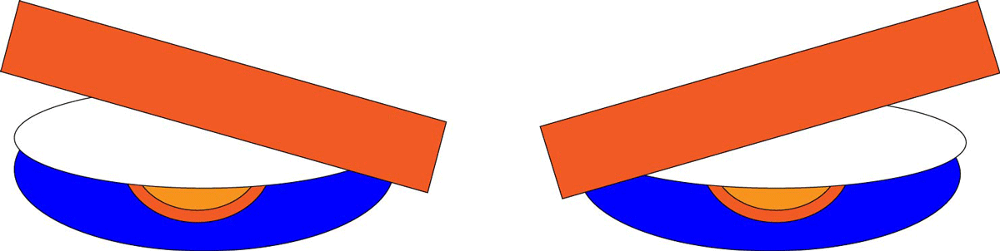

I picked this image of me as a kid on halloween because it’s a funny picture of and due to the way my arms are extended I thought it would be easier to animate. The background isn’t a plain or solid color but I just manually photoshopped the area behind the arm that I animated so that ended up working out well and having the same effect as if I would have animated around a solid color background. I think it was really interesting to experiment using single frame animation, I also was not aware that you could animate using photoshop, I have lots of experience editing video in premiere so it was interesting to see how the interface was different in photoshop. I also enjoyed working on the simple animation, I am not someone who has any experience in animation but I am someone who is a big fan of animation in films and experimental art, so it was interesting to get a small amount of experience in the process first hand. I was already aware of how much hard work, detailed examination, and amount of needed attention to the physical aspects of motion itself is needed to make even the most basic animation, but actually having to do it myself for this small exercise just put further into perspective how much work is needed to create any project with a significant amount of animation.
Back to Home |